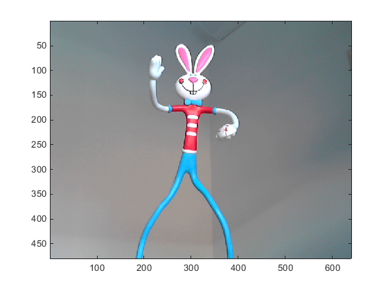

Acquiring a Single Image in a Loop
This example shows how to use the snapshot function to acquire live images from USB Webcams.
MATLAB® Support Package for USB Webcams provides ability to bring live images from any USB Video Class (UVC) compliant Webcam into MATLAB®.
Identifying Available Webcams
The webcamlist function provides a cell array of webcams on the current system that MATLAB® can access.
camList = webcamlist
camList =
'Logitech HD Webcam C310'
Set up Connection to Webcam
A Webcam object represents the connection between MATLAB® and the USB webcam. To create a connection to the webcam, use the webcam function and indicate what camera to be connected with. You can specify the camera either by name or index as returned by webcamlist. This example uses the "Logitech HD Webcam C310" camera. Once the connection is established, you can access specific property values by using the dot(.) notation.
% Connect to the webcam.
cam = webcam(1)
cam =
webcam with properties:
Name: 'Logitech HD Webcam C310'
Resolution: '640x480'
AvailableResolutions: {1x19 cell}
Brightness: 128
Sharpness: 24
Saturation: 32
Gain: 17
Exposure: -4
WhiteBalance: 9930
Contrast: 32
ExposureMode: 'auto'
BacklightCompensation: 1
Preview Video Stream
To open a Video Preview window, use the preview function. The Video Preview window displays the live video stream from the device.
preview(cam);

Acquire a Frame
To acquire a single frame, use the snapshot function.
img = snapshot(cam);
% Display the frame in a figure window.
image(img);

Acquiring Multiple Frames
A common task is to repeatedly acquire a single image, process it, and then store the result. To do this, snapshot should be called in a loop.
for idx = 1:5 img = snapshot(cam); image(img); end

Clean up
Once the connection is no longer needed, clear the associated variable.
clear cam